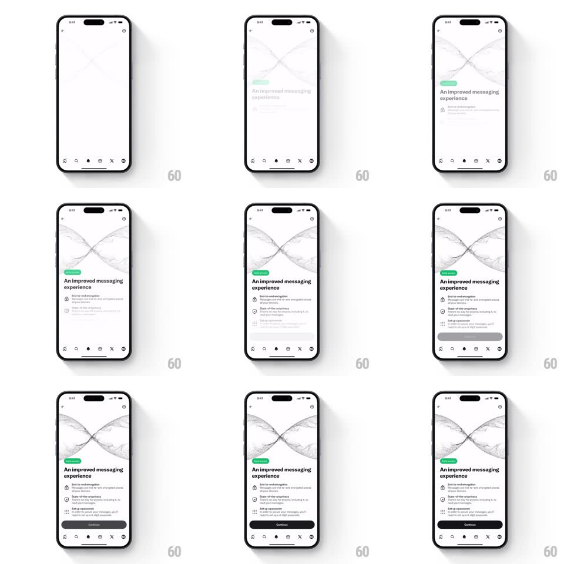

Media
Frame-by-frame

Rebuild this animation 1:1: X's messaging onboarding - over a light screen with a soft infinity-style illustration, the headline, feature rows, and Continue button fade in and slide up one after another.

Rebuild this animation 1:1: X's messaging onboarding - over a light screen with a soft infinity-style illustration, the headline, feature rows, and Continue button fade in and slide up one after another. ## Integration Integration: stack-agnostic spec - springs given as stiffness/damping, timed motions as duration + curve; map every value to your framework and animation library of choice. ## Scene A light X onboarding screen: an abstract line illustration (two crossing loops) up top, then a green "Enabled" chip, the headline "An improved messaging experience", feature rows with icons (end-to-end encryption, state-of-the-art privacy, set up a passcode), and a Continue button above the tab bar. ## Motion spec Pattern: staggered fade + slide-up entrance, ~1.4s total. - Illustration: fades in first (400ms, ease-out) with a slight scale settle (1.03 -> 1). - Chip: the green chip pops in (scale 0.8 -> 1 + fade, 200ms, +250ms). - Headline: fades in and rises (translateY 16px -> 0, 350ms, +150ms). - Feature rows: each row fades and rises the same way (300ms each), staggered 120ms apart. - Continue: fades up last (250ms) once the rows are in. ## Calibration - Every element travels the same small distance (16px) - uniform rise, staggered only in time. - Nothing moves after the entrance completes. ## Reduced motion All elements fade in together (300ms), no rise or stagger. ## Don't miss - The stagger runs top to bottom in reading order. - The tab bar is static and visible from the first frame.